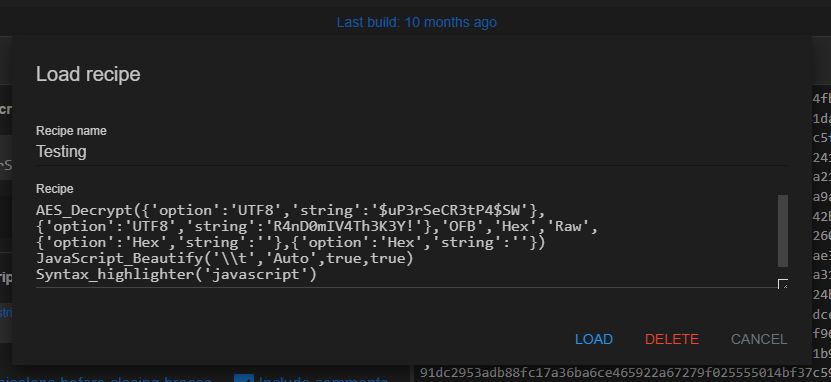
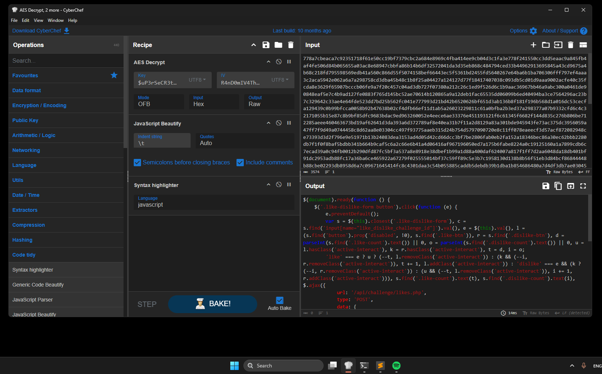

Bringing CyberChef to Localhost
A lightweight Electron$_{v37.2.6}$-powered desktop application, compatible with all major operating systems, bringing CyberChef v10.19.4 to your local machine. This build is based on the official GitHub repository from the UK’s intelligence, security, and cyber agency, GCHQ — creators of the “Cyber Swiss Army Knife.”
Official repository and web version: https://github.com/gchq/CyberChef | https://gchq.github.io/CyberChef/
All credits to GCHQ.
Fully operational, exactly as in the browser. Able to create, load recipies.


You can insert files and download them. However, this is not a CyberChef promotion; rather, it’s a showcase of what can be achieved with Electron.
As this is a demonstration of the tool I will left you here the files used for compiling the electron app in case you want to modify it yourself.
File Distribution
main.js
Main code of the Electron App
const { app, BrowserWindow } = require('electron');
const path = require('path');
let mainWindow;
function createWindow() {
mainWindow = new BrowserWindow({
width: 1200,
height: 800,
title: 'CyberChef',
icon: path.join(__dirname, 'CyberChef_v10.19.4/aecc661b69309290f600.ico'),
webPreferences: {
nodeIntegration: true,
contextIsolation: false,
webSecurity: false
}
});
mainWindow.loadFile(path.join(__dirname, 'CyberChef_v10.19.4/CyberChef_v10.19.4.html'));
mainWindow.webContents.on('did-finish-load', () => {
mainWindow.webContents.executeJavaScript(`
(function() {
let config = localStorage.getItem('config');
if (config) {
config = JSON.parse(config);
} else {
config = {};
}
if (!config.theme || config.theme !== 'dark') {
config.theme = 'dark';
localStorage.setItem('config', JSON.stringify(config));
// Recarga para aplicar (o simula click en el toggle si existe)
location.reload();
}
})();
`);
});
}
app.on('ready', createWindow);
app.on('window-all-closed', function () {
if (process.platform !== 'darwin') {
app.quit();
}
});
app.on('activate', function () {
if (mainWindow === null) {
createWindow();
}
});package.json
Information and dependencies of the proyect
{
"name": "cyberchefnet",
"version": "1.0.0",
"description": "Cyberchef Offline for Forensics Players",
"main": "main.js",
"scripts": {
"start": "electron ."
},
"author": "yoshlsec",
"license": "ISC",
"devDependencies": {
"electron": "^37.2.6"
},
"build": {
"appId": "com.yoshlsec.cyberchefoffline",
"productName": "CyberChef 10.19.4 Offline",
"win": {
"target": "nsis",
"icon": "CyberChef_v10.19.4/aecc661b69309290f600.ico"
},
"mac": {
"target": "dmg",
"icon": "CyberChef_v10.19.4/aecc661b69309290f600.ico"
}
}
}Compiling Cyberchef Code
Finally, you have two options compile by yourself the cyberchef code, where you will need some npm dependencies and doing it in Linux, the only OS supported:
npm install -g grunt-cliAnd later the main code for compilation:
npm install && npm run buildOtherwise, you want to avoid errors and compilations you can download the compiled version from their github releases: https://github.com/gchq/CyberChef/releases/tag/v10.19.4
Depending on the version you will have to change the following line from main.js:
mainWindow.loadFile(path.join(__dirname, 'CyberChef_v10.19.4/CyberChef_v10.19.4.html'));Compiling Electron App
After all, before compiling the final desktop app you can preview it with: npx electron . inside the directory of main.js. To create the exe or elf binary:
For Linux x64:
$> npx electron-packager . CyberChef --icon=.\CyberChef_v10.19.4\assets\aecc661b69309290f600.ico --platform=linux --arch=x64 --out=distLinux --overwriteFor Windows x64:
$> npx electron-packager . CyberChef --icon=.\CyberChef_v10.19.4\assets\aecc661b69309290f600.ico --platform=win32 --arch=x64 --out=distWindows --overwriteFor more compiling information please read: https://www.electronjs.org/docs/latest/tutorial/tutorial-packaging
Binary loaded will be on:
./dist/CyberChef-${platform}-${arch}/CyberChef(.exe)
For direct download visit: https://github.com/yoshlsec/CyberChef-Electron-App/releases/tag/cyberchef